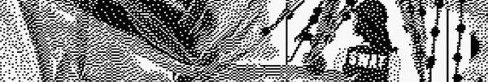
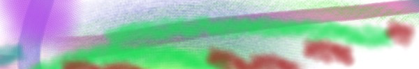
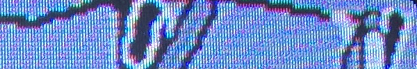
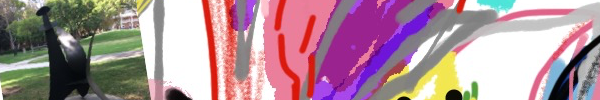
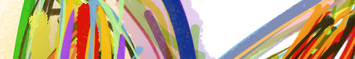

Cleaning Party/I Love Bikerowave
Bikerowave
6pm - 10pm
FREE
The Bikerowave NEEDS YOUR HELP. We're pretty sure it hasn't been deep cleaned in years. Additionally, we need more volunteers. Like, ASAP! Start by coming to our cleaning party. Bring friends. Great prizes. Fresh tunes. BYOB. Bikerowave is a bicycle repair collective, much like the Bicycle Kitchen, Bike Oven, or Valley Bikery here in LA County. We provide space, tools, and equipment in order to effectively teach people how to build, repair, and maintain their bicycles. We are a not-for-profit all volunteer member run organization. Our goal is to empower cyclists with the basic knowledge to maintain their steed, as well as enable them to more easily connect with the cycling community.
LINK

Machines Of Loving Grace: A Symposium on AI, Architecture and Virtual Worlds
UCLA Architecture & Urban Design / Ideas Campus
1pm - 6pm
Free with reservation
Popularly labeled as the 4th Industrial Revolution, the proliferation of artificial intelligence, robotics, automation and virtual reality is transforming the socioeconomic structure of our society and consequently revolutionizing the way we design and experience spaces. These emerging technological paradigms promise a heightened sense of interaction between humans and their environment. In these new scenarios, the software and hardware ecosystems are exceedingly gaining autonomy. Virtual worlds are no longer limited to be interfaces that merely enhance the physical environment but are becoming spaces in their own right; blurring the distinction between the physical and the digital in our constructed reality. The Symposium: Machines of Loving Grace expands the contemporary discussion on the evolution of human-machine society into the domain of architectural discourse.
LINK
Edward Burtynsky | Industrial Abstract
Von Lintel Gallery
6pm - 8pm
FREE
Burtynsky is renowned for his sublime images investigating natural landscapes transformed by human interference. The subjects in Industrial Abstract—international copper, gold, salt mining and lumber operations—are translated into large-scale, sweeping aerials of otherworldly geometries and intoxicating swathes of color. A camera strapped to a drone, or with the artist in a helicopter or plane records extraordinary levels of visual information. Personal details like a truck or boat morph into startling reference points within each colossal view. These compositions are contemplated and deliberate; describing the cumulative impact of industrialization with a sense of beauty and consciousness.
LINK

BoomYard Rum Punch Brunch Day Party
Delicious
12pm - 7pm
$10
A very special edition of #BoomyardLA with #LargeUp and #KingstonToLa at Delicious Pizza in Los Angeles for an afternoon of great Reggae, Dancehall, Soca and Tropical musical vibes with delicious pizza, Sangria, dancing and more! DJ DELANO RENAISSANCE SOUND (RENAISSANCE DISCO - JA) DJ Samurasta aka Bennett Harada w/ special guests: D.j. RampageGlobal Hinks Tiger, Andre DjEnroute Burke, Nikki Kush
LINK
Fraud
Cinefamily
5pm (also on 3/14 at 10:30pm)
$12
A great feat of editing, Fraud follows a working class family in pursuit of the contemporary, ultra-capitalist American Dream… or so it seems. With an impressionistic meta-narrative constructed from one family’s 100+ hours of confessional YouTube uploads, Fleischer-Camp’s succinct piece revels in the slippery relation between fact and fantasy on the World Wide Web. Composed entirely of found-footage, Fraud challenges the bounds of both documentary and narrative at every turn, suggesting that perhaps, it’s neither.
LINK

ARTSTUFF.WTF is a minimal website listing page for selected art (and etc) events going on around Los Angeles. It is a personal list of 4 - 6 events sent out to friends weekly, and made available online here for bookmarking and quick reference. There is an archive of past listings. Sign up to receive weekly emails.
